산림기사 (2012-05-20 기출문제)
1과목: 조림학
1. 다음은 수목 체내에서 일어나는 탄수화물의 계절적인 변화에 대한 설명이다. 다음 중에서 바르게 설명하고 있는 것은?
- 낙엽수는 가을에 줄기 체내의 탄수화물 농도가 최저로 떨어진다.
- 낙엽수는 겨울철에 줄기내 전분의 함량이 증가하고 환원당의 함량이 감소된다.
- 상록수의 경우에 체내 탄수화물 함량의 계절적인 변화는 낙엽수에 비하여 상대적으로 적은 편이다.
- 재발성 개엽(recurrently flushing) 수종은 줄기생장이 이루어질 때마다 탄수화물이 증가한 다음 다시 감소한다.
(정답률: 79%)

2. 우리나라 소나무의 형질개량을 위해 가장 많이 사용되어 왔던 육종방법은?
- 교잡육종법
- 도입육종법
- 조직배양법
- 선발육종법
(정답률: 81%)
3. 묘포에서의 시비에 관한 설명 중 잘못된 것은?
- 비료의 종류와 양은 지역의 실정을 고려하여 정한다.
- 묘목은 생장시기에 따라 요구하는 양분의 종류가 다르므로 이를 고려하여야 한다.
- 기비는 속효성 비료로 추비는 퇴비와 무기질 비료를 사용하는 것이 좋다.
- 토양미생물의 번식을 도와 토양의 이학적 성질을 개선할 수 있다.
(정답률: 85%)
4. 토양생물에 관한 설명으로 옳은 것은?
- 방사상균은 산성토양에 저항력이 높다.
- 식물의 뿌리는 토양구조 발달을 억제한다.
- 토양 균류는 종자 파종되어 생장중인 임목의 뿌리를 감염시켜 여러 가지 병원균으로부터 뿌리의 보호기능을 할 수 없도록 한다.
- 대부분 토양동물은 공간적인 조건이나 광조건이 양호한 낙엽층이나 부식층에 서식한다.
(정답률: 78%)
5. 파종상에서 1년, 판갈이 상에서 1년된 2년생 실생 묘목의 연령을 맞게 표시한 것은?
- 1-1묘
- 1-2묘
- 1-1-2묘
- 2-1묘
(정답률: 85%)
6. 다음은 동일수종, 동일연령 그리고 같은 임지에 있어서 밀도만을 다르게 할 때 임목의 형질과 생산량에 나타나는 현상을 설명한 것이다. 틀린 것은?
- 줄기의 평균흉교직경은 밀도가 높을수록 작게 된다.
- 수간형은 고밀도 일수록 완만하게 된다.
- 단위 면적당 간재적은 밀도가 높아질수록 작아진다.
- 고밀도일수록 연륜폭은 좁아진다.
(정답률: 63%)
7. 개화결실 주기성이 가장 짧은 수종은?
- 소나무
- 전나무
- 낙엽송
- 구주소나무
(정답률: 57%)
8. 다음 그림 중 사선을 친 부분은 나무가 벌채된 것이다. 이러한 갱신 벌채를 받았다면 이 임분에 대해서 어떠한 삼림작업법이 적용되고 있는가?
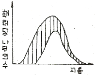
- 모수작업
- 보잔목작업
- 중림작업(하목개벌)
- 산벌작업(하종벌)
(정답률: 62%)
9. 순림과 혼효림의 구성에 관한 기술 중 옳지 않은 것은?
- 따뜻한 지방에는 혼효림이 많다.
- 특수한 토지조건은 순림을 조성시킨다.
- 지력이 빈약할수록 혼효가 어렵고 순림형성이 비교적 잘된다.
- 양수는 음수보다 순림형성이 쉽다.
(정답률: 53%)
10. 생태형의 개념에 관련되는 것은?
- 녹나무
- 반송
- 강송
- 낙엽송
(정답률: 65%)
11. 40년생 잣나무 조림지에서 간벌을 실시하였다. 실선 부분이 간벌에 의해 제거된 부분이라고 할 때, 하층간벌에 의한 입목 본수와 흉고직경 분포를 나타낸 것은?
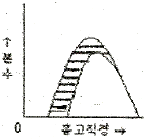
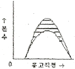
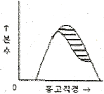
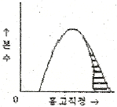
(정답률: 80%)
12. 종자발아촉진방법이 아닌 것은?
- 황산처리법
- 테트라졸륨처리
- 침수처리
- 파종시기의 변경
(정답률: 75%)
13. 다음은 수목종자의 발아촉진 방법과 해당 수종을 연결한 것이다. 적합하지 않은 것은?
- 침수처리법 - 삼나무
- 황상처리법 - 옻나무
- 기계적방법 - 소나무
- 노천매장법 - 잣나무
(정답률: 78%)
14. 아래 그림은 무슨 접목을 하는 방법을 나타내고 있는가?
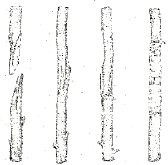
- 절접
- 박접
- 아접
- 설접
(정답률: 69%)
15. 잣나무에 관한 기술 중 틀린 것은?
- 종자에 달린 날개는 퇴화되어 있다.
- 한 엽속에 침엽이 5개이다.
- 잎은 세모가 지고 이면에 흰 기공선이 있다.
- 엽 횡단면상에 수지구가 5개 이상 있다.
(정답률: 73%)
16. 숲 가꾸기를 할 때 미래목의 선정요건으로 맞지 않는 것은?
- 미래목간의 간격은 최소한 2m 정도로 한다.
- 헥타당 선정본수는 수종과 경영목표에 따라서 다르지만 최고 400 본 정도로 한다.
- 임연부 임목은 가급적 미래목에서 제외한다.
- 맹아갱신(움갈이) 임분에서의 미래목은 가급적 실생묘로 한다.
(정답률: 53%)
17. 균근의 특징이나 기능 등에 대하여 바르게 설명하고 있는 내용은?
- 공중질소를 고정하는 기능을 지닌다.
- 인산 등을 포함하여 무기양료의 흡수를 촉진한다.
- 송이버섯은 소나무와 관계가 있는 대표적인 내생균근이다.
- 소나무나 전나무에 잘 기생하는 내생균근은 균사망(hartig net)을 잘 형성한다.
(정답률: 65%)
18. 다음 중 수목의 광합성과 관련한 설명으로 바르게 기술하고 있는 것은?
- 우리나라에 자라는 대부분의 활엽수는 C-4식물군에 속한다.
- 엽록체 내에서 광에너지를 이용한 광반응이 일어나는 곳은 스트로마(stroma)이다.
- 수목 한 개체 내에서는 양엽이나 음엽에 상관없이 광보상점이나 광포화점이 동일하다.
- 수목은 동일 개체에서도 내음성이 수령이나 생육조건 등에 따라서 변화를 보일 수 있다.
(정답률: 69%)
19. 향토 품종의 우월한 점은 무엇인가?
- 생육환경에 잘 적응하고 있다.
- 외래품종보다 생장이 우량하다.
- 생장이 빠르다.
- 병충해의 저항이 작다.
(정답률: 83%)
20. 산림 벌채 후 임지에 남기는 대형 벌채 잔여물에 대해서는 존치와 제거에 대한 의견이 분분하다. 대형 벌채 잔존물을 남겼을 때 기대되는 효과가 아닌 것은?
- 장기적인 토양 양분 공급
- 계류의 영양 농도 조절
- 내화수림대 역할
- 야생동물의 서식처 제공
(정답률: 71%)
2과목: 산림보호학
21. 다음 중 염풍(鹽風)에 강한 수종이 아닌 것은?
- 자귀나무
- 배나무
- 향나무
- 돈나무
(정답률: 71%)
22. 우리나라 산림에 피해를 주는 산림병해충 중 외래 침입병 해충으로만 짝지어진 것은?
- 아까시잎혹파리, 솔잎혹파리, 소나무재선충병
- 버즘나무방패벌레, 솔나방, 솔껍질깍지벌레
- 잣나무넓적잎벌, 솔수염하늘소, 솔잎혹파리
- 미국흰불나방, 버즘나무방패벌레, 밤나무혹벌
(정답률: 47%)
23. 다음 중 흡즙성 해충이 아닌 것은?
- 도토리거위벌레
- 버즘나무방패벌레
- 솔껍질깍지벌레
- 느티나무벼룩바구미
(정답률: 58%)
24. 상주의 방제방법을 기술한 것 중 옳지 않은 것은?
- 천연적 지피물을 보존한다.
- 가을철 파종시에는 복토를 다소 얇게 한다.
- 피해가 예상되는 곳에서는 파종조림을 피하고 식재 조림을 한다.
- 피해가 예상되는 곳에서는 토양에 탄분이나 모래를 혼입한다.
(정답률: 76%)
25. 삼나무 붉은마름병(浾枯炳)의 월동 상태로 옳은 것은?
- 땅속에서 포자상태로 월동한다.
- 병환부의 조직 내부에서 균사덩이 형태로 월동한다.
- 가지 또는 잎에서 포자상태로 월동한다.
- 초본류에서 포자상태로 월동한다.
(정답률: 58%)
26. 병원체의 전반방법 중 토양에 의해 전반되는 병원체는?
- 밤나무의 줄기마름병균
- 향나무의 적성병균
- 오동나무의 빗자루병 병원체
- 묘목의 모잘록병
(정답률: 86%)
27. 다음 중 솔잎혹파리의 기생성 천적이 아닌 것은?
- 솔잎혹파리먹좀벌
- 혹파리원뿔먹좀벌
- 혹파리살이먹좀벌
- 혹파리등뿔먹좀벌
(정답률: 80%)
28. 호두나무잎벌레에 대한 설명으로 옳은 것은?
- 년 2회 발생하며, 알로 월동한다.
- 년 2회 발생하며, 유충으로 월동한다.
- 년 1회 발생하며, 성충으로 월동한다.
- 년 1회 발생하며, 유충으로 월동한다.
(정답률: 73%)
29. 다음 중 성충과 유충(幼蟲)이 동시에 잎을 가해하는 것은?
- 솔잎혹파리
- 복숭아명나방
- 박쥐나방
- 오리나무잎벌레
(정답률: 75%)
30. 다음 중 잣나무 털녹병 방제법에 해당되지 않는 것은?
- 중간기주의 박멸
- 보르도액 살포
- 혼효림 조성
- 저항성 품종 육성
(정답률: 55%)
31. 다음 중 밤나무 종실을 가해하는 해충은?
- 복숭아명나방
- 복숭아심식나방
- 솔알락명나방
- 백송애기잎말이나방
(정답률: 90%)
32. 겨울철에 제설을 위하여 사용되는 해빙염(deicing salt)에 관하여 잘못 설명한 것은?
- 염화칼슘이나 염화나트륨이 주로 사용된다.
- 흔히 수목의 잎에는 괴사성 반점(점무늬)이 나타난다.
- 장기적으로는 수목의 쇠락(decline)으로 이어진다.
- 일반적으로 상록수가 낙엽수보다 더 큰 피해를 입는다.
(정답률: 60%)
33. 다음 중 천적 등 방제대상이 아닌 곤충류에 가장 피해를 주기 쉬운 농약은?
- 지속성 접촉제
- 훈증제
- 전착제
- 침투성 살충제
(정답률: 63%)
34. 다음 식물 중 잣나무 털녹병의 겨울포자(冬胞子)를 형성하는 식물은?
- 잣나무
- 참취
- 황벽나무
- 송이풀
(정답률: 85%)
35. 다음 수목병 중에서 세균에 의한 것은?
- 소나무 혹병
- 낙엽송 끝마름병
- 잣나무 털녹병
- 밤나무 뿌리혹병
(정답률: 72%)
36. 서로 다른 환경유형이 인접한 공간으로 인접한 양쪽 환경유형을 다른 목적으로 이용하는 동물들에게 중요한 미세 서식지로 제공되는 공간은?
- 임연부
- 피난처
- 세력권
- 행동권
(정답률: 81%)
37. 다음 포유류 중 현재 우리나라의 천연기념물이 아닌 것은?
- 수달
- 산양
- 하늘다람쥐
- 호랑이
(정답률: 80%)
38. 잣송이를 가해하여 수확을 감소시키는 중요한 해충이며, 구과속의 가해부위에 벌레똥을 채워놓고 외부로도 똥을 배출하여 구과표면에 붙여 놓으며 신초에도 피해를 주는 해충은?
- 소나무좀
- 솔악락명나방
- 솔박각시나방
- 솔수염하늘소
(정답률: 77%)
39. 세균이 식물에 침입할 수 있는 자연개구부에 해당하지 않는 것은?
- 기공
- 피목
- 밀선
- 체관
(정답률: 61%)
40. 파이토플라스마에 의한 수목병의 전염방법에 속하지 않는 것은?
- 접목전염
- 즙액전염
- 매개충전염
- 새삼전엽
(정답률: 53%)
3과목: 임업경영학
41. 임반 ㆍ 소반의 구획선 및 면적을 명백히 하기 위하여 실시하는 측량으로 가장 적합한 것은?
- 주위측량
- 시설측량
- 산림구획측량
- 산림고저측량
(정답률: 59%)
42. 재적 측정이 가능하고 목재로서 이용가치가 높은 임목은 시장역산가식에 의하여 평가할 수 있다. 아래 식은 시장역산가를 나타내는 관계식이다. 여기서 b는 무엇인가? (단, x는 임목단가, f 는 이용율(조재율), a는 생산원목의 최기시장에서의 판매단가, ℓr은 자본회수기간을 나타낸다.)
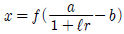
- 이용율
- 임목시가
- 단위 생산비
- 임목가격
(정답률: 74%)
43. 자연휴양림의 입지선정 조건으로 거리가 먼 것은?
- 수원이 풍부한 곳
- 경관이 수려하고 임상이 울창한 곳
- 생물의 종이 풍부하고 개발이 제한되어 있는 곳
- 개발이 가능하고 각종 여건이 용이하며 접근성이 좋은 곳
(정답률: 82%)
44. 목편의 총중량이 4t, 그 중에서 무게가 20kg인 표본을 선정하여 측용기로 측정한 결과 재적이 30ℓ 이었다. 이 목편의 총재적은 얼마인가?(단, 수온이 4℃일 때 물 1kg은 1ℓ 이며, 1ℓ = 1/1000 m3 이다.)
- 6m3
- 200m3
- 600m3
- 6000m3
(정답률: 36%)
45. 손익분기점분석에 따른 총비용을 E=f+bX로 계산 할 때 이식에서 X가 뜻하는 것은?(단, 식에서 E는 총비용, f는 고정비, b는 단위당 변동비이다.)
- 판매량
- 변동비
- 고정비
- 총수익
(정답률: 74%)
46. 중앙 직경이 10cm, 재장이 10m인 통나무의 재적을 Huber식으로 계산하면?
- 0.0785m3
- 0.0975m3
- 0.1⑤0m3
- 0.1230m3
(정답률: 79%)
47. 우리나라에서 임지의 생산력을 수치로 나타낸 지위지수(site index)는 무엇을 기준으로 작성하는가?
- 우세목의 수고
- 우세목의 흉고직경
- 우세목의 재적
- 우세목의 수관폭
(정답률: 75%)
48. 법정연간벌채량을 NAC, 법정생장량을 ln, 벌기평균생장량을 MAI, 윤벌기를 R, 벌기임분의 재적을 Vr로 표시할 때 이 4가지 사항의 관계를 바르게 나타낸 것은?
- NAC = ln = MAI ÷ R = Vr
- NAC = ln = MAI + R = Vr
- NAC = ln = MAI × R = Vr
- NAC = ln = MAI - R = Vr
(정답률: 72%)
49. 자연휴양림의 공익적 효용을 직접효과와 간접효과로 구분할 때 간접효과에 해당되는 것은?
- 대기정화기능
- 건강증진효과
- 정서함양효과
- 레크레이션효과
(정답률: 83%)
50. 산림경영계획 수립을 위한 임상조사에서 입목지를 활엽수림으로 구분하는 기준은?
- 활엽수가 50% 이상인 산림
- 활엽수가 60% 이상인 산림
- 활엽수가 70% 이상인 산림
- 활엽수가 75% 이상인 산림
(정답률: 80%)
51. 산림청장 또는 시 ㆍ 도지사가 산림문화 휴양 기본 계획 및 지역계획을 수립하거나 이를 변경하고자 할 때에 실시해야하는 기초조사 내용은?
- 산림문화 ㆍ 휴양정보망의 구축 ㆍ 운영실태
- 산림문화 ㆍ 휴양자원의 보전 ㆍ 이용 ㆍ 관리 및 확충 방안
- 산림문화 ㆍ 휴양자원의 현황과 주변지역의 토지이용실태
- 산림문화 ㆍ 휴양을 위한 시설 및 안전관리에 관한사항
(정답률: 68%)
52. 연간 임산품생산과 관련된 고정비가 2000000원이고, 변동비가 5000원이다. 임산품의 판매단가가 6000원일 경우에 손익분기점에 해당하는 임산품의 생산량을 계산하면?
- 400개
- 500개
- 1000개
- 2000개
(정답률: 59%)
53. 다음 중 Nicklisch의 임업자산 계산 등식으로 맞는 것은? (단, 총재산(자산)을 A, 타인자본(부채)을 P, 자기자본(자본)을 K라 한다.)
- K = A - P
- K = P - A
- K = A + P
- K = A ÷ P
(정답률: 55%)
54. 자연휴양림의 수림 공간 형성 특성 중 레크레이션 활동 공간으로써 부적합하나 교육적ㆍ학습적 활동이 가능한 수림형은?
- 열 개림형
- 소생림형
- 산개림형
- 밀생림형
(정답률: 51%)
55. 임목의 평가방법에 대한 분류방식으로 옳지 않은 것은?
- 원가방식 - 비용가법
- 수익방식 - 기망가법
- 원가수익절충방식 - 임지기망가법응용법
- 비교방식 - Glaser법
(정답률: 76%)
56. 다음 임지기망가(Bu)에 대한 설명 중 틀린 것은?
- 지위가 양호한 임지일수록 Bu가 최대가 되는 시기가 늦어진다.
- 조림비가 클수록 bu가 최대가 되는 시기가 늦어진다.
- 이율이 낮을수록 최대가 되는 시기가 늦어진다.
- 간벌 수익이 클수록 bu의 최대값이 빨리 온다.
(정답률: 68%)
57. 임업소득에 작용하는 생산요소에 포함되지 않는 것은?
- 보속성
- 임지
- 자본
- 노동
(정답률: 81%)
58. 사유림의 경영에 있어 공동산림사업(협업경영)을 권장하는 것이 바람직한 경영형태는?
- 농가 임업
- 부업적 임업
- 겸업적 임업
- 주업적 임업
(정답률: 46%)
59. 임업경영의 생산요소 중 생산수단에 속하는 것은?
- 노동, 자본재
- 노동, 임지
- 임지, 자본재
- 노동, 임도
(정답률: 49%)
60. 표준목법 중에서 전임목의 몇 개의 계급(grade)으로 나누고 각 계급의 흉고단면적을 동일하게 하여 임분의 재적을 추정하는 방법은?
- 단급법
- Draudt법
- Urich법
- Hartig법
(정답률: 50%)
4과목: 임도공학
61. 임도의 곡선반경이 13m 이상~14m 미만인 경우 곡선부에 증가시켜야하는 폭의 너비(확대기준)는 몇 m 이상이어야 하는가?
- 1.0m
- 2.0m
- 3.0m
- 4.0m
(정답률: 54%)
62. 임도 노면의 유지ㆍ보수 내용 중에서 틀린 것은?
- 노면보다 높은 길어깨는 깍아내어 노면과 같이 평탄하게 처리한다.
- 노면고르기는 노면이 건조한 상태보다 어느 정도 습윤한 상태에서 실시한다.
- 노체의 지지력이 약화될 때 자갈이나 쇄석 등을 깐다.
- 노체의 지지력이 약화되었을 경우 기층 및 표층의 재료를 고체해서는 안된다.
(정답률: 81%)
63. 다음 중 임도의 설계속도와 가장 관련이 없는 것은 어느 것인가?
- 노폭
- 차폭
- 물매
- 곡선반지름
(정답률: 51%)
64. 평판으로 세부측량을 실시할 때 측량지역에 장애물이 적고 넓게 시준할 경우에 가장 능률적인 방법은?
- 방사법
- 전진법
- 도선법
- 교회법
(정답률: 73%)
65. 법률상 규정한 우리나라의 간선임도 ㆍ 지선임도의 유효너비는 몇 m를 기준으로 하는가?
- 2.5
- 3
- 3.5
- 4
(정답률: 75%)
66. 지형도 상에서 임도 노선을 측설하고자 한다. 지형도의 등고선 간격이 5m 이고, 두 등고선과 교차하는 지점의 임도 종단 물매를 10%로 할 때 수평거리는 얼마나 되겠는가?
- 5m
- 10m
- 50m
- 100m
(정답률: 80%)
67. 일반적인 토사로 구성된 절개지 비탈면에 비탈격자틀 붙이기 공법을 채용하고자 한다. 경관을 우선적으로 고려했을 때 격자를 내부에 적용할 가장 적합한 방법은?
- 자갈채우기
- 콘크리트채우기
- 떼채우기
- 객토채우기
(정답률: 68%)
68. 다음 중 땅밀림지대 또는 지반이 연약한 곳에 시공하기에 가장 적합한 비탈흙막이공법은?
- 비탈콘크리트블록흙막이공법
- 비탈콘크리트의목흙막이공법
- 비탈돌망태흙막이공법
- 비탈통나무쌓기흙막이공법
(정답률: 56%)
69. 트래버스 측량성과 계산과정에서 합위거, 합경거를 구하는 가장 큰 이유는 무엇인가?
- 오차를 정확히 파악할 수 있다.
- 제도를 정확히 하기 위함이다.
- 폐차를 정확히 구하기 위함이다.
- 폐비를 정확히 구하기 위함이다.
(정답률: 41%)
70. 집재가선을 설치할 때, 본줄을 설치하기 위한 지주에서 집재기 쪽의 지주를 무엇이라 하는가?
- 머리기둥
- 꼬리기둥
- 안내기둥
- 받침기둥
(정답률: 80%)
71. 임도 개설시 흙깎기(땅깎기) 작업에 대한 설명으로 옳지 않은 것은?
- 시공현장의 함수비를 저하시킬 때에는 트랜치(trench)를 파서 지하수위를 내리는 방법이 유효하다.
- 흙쌓기와 흙쌓기공사를 시공할 때는 현장에 적당한 간격으로 흙일겨냥틀(leading frame)을 설치해야 한다.
- 일반적으로 임도에서 흙깎기비탈의 물매는 보통토사는 0.3, 암석은 0.8을 표준으로 한다.
- 흙깎기토량이 많은 임도개설공사의 경우에는 사토(捨土)할 장소에 대해서도 주의해야 한다.
(정답률: 66%)
72. 임도망 배치의 효율성 정도를 나타내는 개발지수에 대한 설명으로 틀린 것은?
- 개발지수의 산출식은 (평균집재거리×임도밀도)/2500 이다.
- 균일하게 임도가 배치되었을 때 개발지수는 1.0 이다.
- 개발지수가 1보다 크면 클수록 임도배치 효율이 크다.
- 노선이 중첩되면 될수록 임도배치 효율성은 낮아진다.
(정답률: 68%)
73. 다음 중 임도의 공사원가 산출시 순공사비에 속하지 않는 것은?
- 일반관리비
- 재료비
- 노무비
- 경비
(정답률: 60%)
74. 성토사면에 있어서 소단에 대한 설명으로 가장 적합하지 않은 것은?
- 성토의 안정성을 높인다.
- 소단의 폭은 3~4m 가 좋다.
- 유지보수작업을 할 때 작업원의 발판으로 이용한다.
- 사면에서 흘러내리는 사면침식을 줄인다.
(정답률: 74%)
75. 임도 시설시 곡선부 안쪽에 절토부가 있을 경우 시야가 가려지므로 층따기를 하여야 한다. 곡선의 내각이 50°, 곡선반지름이 45m 일 때 안쪽 층따기의 거리는 얼마로 하여야 하는가? (단, cos 25° = 0.906, cos50° = 0.642 이다.)
- 3.4m
- 4.2m
- 4.6m
- 5.1m
(정답률: 53%)
76. 다음 중 종단물매의 산출에 따른 설명으로 가장 올바른 내용은?
- 종단물매는 시공 후 임도의 개 ㆍ 보수를 통하여 손 쉽게 변경할 수 있다.
- 종단물매는 완만한 것이 좋기 때문에 0%를 유지하는 것이 좋다.
- 종단물매를 높게 하면 임도우회율을 낮출 수 있다.
- 종단물매의 계획은 설계차량의 규격과 관계가 없다.
(정답률: 78%)
77. 다음 지형의 표시방법 중 자연적 도법에 해당하는 것은?
- 영선법
- 단채법
- 점고법
- 등고선법
(정답률: 56%)
78. 트래버스 측량을 실시한 바 폐합된 지역의 측량시 장애물로 인하여 측선 CD의 방위각 및 거리를 측정하지 못하였다. 측량결과가 아래의 표와 같을 경우 빈칸 측선 CD의 에 적당한 값을 산출하면? (단, 위 경거 오차는 없는 것으로 한다.)(오류 신고가 접수된 문제입니다. 반드시 정답과 해설을 확인하시기 바랍니다.)
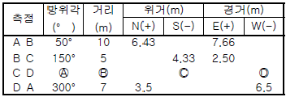
- 36.2°, 7.94m, 3.6m, 5.2m
- 216.2°, 6.94m, 5.6m, 4.1m
- 245.2°, 10.94m, 7.0m, 5.3m
- 301.2°, 11.94m, 5.6m, 5.4m
(정답률: 57%)
79. 간선임도 ㆍ 지선임도의 시설규정에서 정하고 있는 성토한 경사면의 기울기 범위는?
- 1:1.2~2.0
- 1:0.3~0.8
- 1:2.0~2.5
- 1:0.5~1.0
(정답률: 58%)
80. 다음 기계톱의 구조 중에서 동력전달부에 속하지 않는 것은?
- 크랭크축
- 원심클러치
- 안내판
- 스프라킷
(정답률: 24%)
5과목: 사방공학
81. 증발산 중에서 식생으로 피복된 지면으로부터의 증발량과 증산량만을 특히 무엇이라 하는가?
- 증산률
- 소비수량
- 증발산률
- 증발기회
(정답률: 64%)
82. 흙댐에 관한 설명 중 잘못된 것은?
- 흙댐의 포화수선은 댐 밑 외부에 있어야 댐이 안정하고, 심벽은 포화수선을 위로 올려주는 역할을 한다.
- 유역면적이 비교적 좁고 유량과 유송토사가 적지만 계폭이 비교적 넓은 경우에 건설한다.
- 댐의 안전을 위해 심벽을 넣는데 심벽 재료로서 사질토나 점질토를 사용한다.
- 일반적으로 흙댐 마루의 나비는 2~5m 정도로 한다.
(정답률: 59%)
83. 돌을 쌓아 올릴 때 뒷채움에 콘크리트를 사용하고, 줄눈에 모르타르를 사용하는 돌쌓기는 무엇인가?
- 메쌓기
- 찰쌓기
- 막쌓기
- 잡석쌓기
(정답률: 75%)
84. 다음의 사방공종 중에서 지하수 처리공법에 속하는 것은?
- 집수정 공법
- 돌림수로 내기
- 침투수 방지공법
- 주입공사
(정답률: 68%)
85. 특수 비탈면 안정공법 중에서 앵커박기공법은 주로 어디에 사용되는가?
- 비탈 보호나 완만한 경사로 성토를 할 곳
- 급경사의 대규모 암반비탈에 암석이 노출되어 녹화 공사가 불가능한 곳
- 비탈의 암질이 복잡하고 마사토로 구성되어 취급이 곤란하고 지하수가 용출하는 곳
- 비탈 경사가 현저하게 급한 곳에서 토압이 큰 곳이나 비탈 틀공법 혹은 흙막이공사 등을 계획하는 곳
(정답률: 57%)
86. 산지계류의 곡선부에 설치하는 사방댐의 제체 방향은 유심선과 어느 각도를 이루도록 계획하는 것이 가장 안전한가?
- 45도
- 60도
- 90도
- 180도
(정답률: 76%)
87. 해안사구 중에서 해안으로부터 가장 멀리 떨어져 조성되어 있는 사구는?
- 앞모래언덕
- 주사구
- 자연사구
- 후사구
(정답률: 45%)
88. 등산로 이용자의 편의도모 및 환경훼손적인 이용 형태를 규제하기 위해서 고려해야 될 사항과 거리가 먼 것은?
- 경사도에 따라 다양한 바닥시설을 한다.
- 통행량에 따라 등산로 폭을 다양하게 조정한다.
- 이용규제를 위하여 다양한 경계울타리를 설치한다.
- 자연발생적 등산로는 먼저 식생을 복원하고 지형을 복구한다.
(정답률: 75%)
89. 비탈 돌쌓기공법의 설명으로 틀린 것은?
- 비탈 물매가 1:1보다 완만한 경우는 돌붙이기라 한다.
- 찰쌓기공법에는 2~3m2 마다 물빼기 구멍을 설치한다.
- 돌쌓기의 물매는 일반적으로 메쌓기의 경우 1:0.3 이다.
- 돌쌓기는 일곱에움 이상 아홉에움 이하가 되도록 한다.
(정답률: 80%)
90. 일반적으로 환경보전림의 기능이라고 볼 수 없는 것은?
- 대기, 수질, 악취를 저감하는 환경정화기능
- 소음, 진동의 완충, 방재 등 안정성 유지기능
- 시 ㆍ 도지역 조수의 보호, 번식 등 야생동물보호기능
- 도시개발에 따른 도시확산 및 연담(conurbation)현상 완화기능
(정답률: 30%)
91. 댐의 방수로 크기를 결정하기 위한 최대홍수량 산정방법 중 합리식(Ramser's rational formula)의 공식은? (단, 식에서 Q:유역출구에서의 최대홍수유량, C:배수 유역의 특성에 따라 결정되는 유출계수, V: 유속, I: 강우강도, A: 유역면적을 나타낸다.)
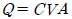
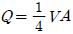
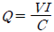
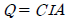
(정답률: 79%)
92. 바닥막이공작물의 위치선정 지점으로 적합하지 않은 것은?
- 분지합류지점(分支合流地点)의 하류
- 종 ㆍ 횡침식의 하류
- 계상 굴곡부의 하류
- 계상이 안정된 지점
(정답률: 70%)
93. 중력침식의 한 형태인 붕락(slumping)에 대하여 가장 바르게 설명한 것은?
- 붕락은 일반적으로 붕괴되어 온 토괴의 대부분이 그 비탈면의 끝이나 산각부에 남아 있다.
- 붕락은 그 발생부위에 반드시 유수가 관계하고 있다.
- 붕락은 비탈면 끝을 흐르는 계천의 가로침식으로 무너지는 현상이다.
- 붕락은 누구침식이 더욱 발달하여 규모가 깊고 넓게 확대된 침식형태이다.
(정답률: 58%)
94. 막깬돌, 잡석, 호박돌 등을 붙여 축설하며 유량이 적고 기울기가 비교적 급한 산복에 이용되는 수로는 무엇인가?
- 찰붙임 돌수로
- 메붙임 돌수로
- 콘크리트 수로
- 떼붙임 수로
(정답률: 53%)
95. 다음 중 구곡막이에 대한 설명 중에서 잘못된 것은?
- 수로를 별도로 축설하지 않고, 중앙부를 낮게 한다.
- 반수면은 토사를 채우고, 대수면은 떼를 입힌다.
- 계상이 낮아질 위험성이 있는 곳에 설치한다.
- 사방댐보다 규모가 작다.
(정답률: 66%)
96. 다음 중 비탈면 안정공법이 아닌 것은?
- 힘줄박기 공법
- 새심기 공법
- 격자틀붙이기 공법
- 돌쌓기 공법
(정답률: 73%)
97. 다음 중 높이 10m 에 1:0.3 물매일 대 수평거리는?
- 30cm
- 3.0m
- 103cm
- 3.3m
(정답률: 66%)
98. 불량한 돌쌓기 공사시에 나타나는 금기들이 아닌 것은?
- 뜬돌
- 거울돌
- 포갠돌
- 굄돌
(정답률: 80%)
99. 토양침식형태를 물침식과 중력침식으로 분류할 때 중력침식에 해당되지 않는 것은?
- 붕괴형침식
- 지활형침식
- 유동형침식
- 지중침식
(정답률: 71%)
100. 해안사방지의 조림용 수종이 구비해야 할 조건과 거리가 먼 것은?
- 바람에 대한 저항력이 클 것
- 양분과 수분에 대한 요구가 많을 것
- 온도의 급격한 변화에도 잘 견디어 낼 것
- 조풍(潮風)의 피해에도 잘 견디어 낼 것
(정답률: 84%)